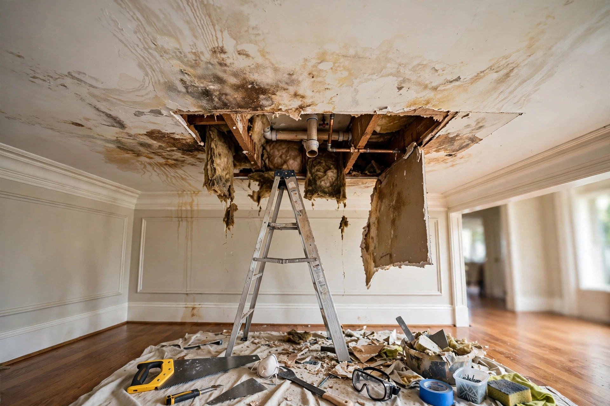

Ceiling Water Damage Repair in Eagle, ID
A brown stain spreading across the ceiling. A soft spot that gives when you press it. A drip that appears every time the upstairs shower runs. Ceiling water damage looks minor from below — the real story is always above.
What ceiling repair typically runs
| Scope | Details | Typical range |
|---|---|---|
| Stain only | Source already fixed, seal and repaint | $300 – $600 |
| Section replacement | Cut out, dry, new drywall, texture, paint | $900 – $2,200 |
| Source + ceiling | Plumbing fix plus full ceiling restoration | $2,000 – $5,000+ |
Illustrative ranges. The source repair is often the bigger variable — call (321) 985-3339 for an assessment.
What proper ceiling repair involves
Find the source
Moisture meters and sometimes a small inspection opening trace the water path. Repairing the ceiling without fixing the source is money thrown away.
Open and assess
The damaged section comes out. We check insulation, framing, and the extent of spread — water travels along joists further than the stain suggests.
Dry everything
Wet framing and insulation dry fully before closing up. Trapped moisture becomes tomorrow's mold colony.
Rebuild and blend
New drywall, tape, texture matched to your ceiling finish. Eagle's higher-end textures — knockdown, orange peel — need a skilled hand to disappear.
A homeowner in an Eagle two-story notices a yellow-brown ring on the living room ceiling, directly below the kids' bathroom. The culprit: a shower pan that's been seeping at the curb for months, saturating the subfloor. The ceiling repair is straightforward — but the subfloor needs drying and the shower pan needs rebuilding. The stain was the messenger, not the problem.
A note on newer construction
Eagle's housing stock is young, which changes the ceiling-leak picture. Roof failures are rare; plumbing and HVAC issues dominate. The good news: source repairs are usually straightforward. The challenge: water travels through engineered trusses in ways that surprise homeowners — a stain in the living room can trace back to a bathroom two rooms over.
Straight answers
Can I just paint over a water stain on my ceiling?
Only after the source is fixed and the area is fully dry. Use a stain-blocking primer — regular paint lets brown bleed right through. But if the drywall is soft, sagging, or the stain keeps growing, paint is hiding a problem that needs opening up.
How do I know if my ceiling will collapse?
Sagging, bubbling paint, and visible bowing are warning signs — saturated drywall gets heavy. If a section looks like it's straining, don't stand under it and call (321) 985-3339. Better safe than dealing with a collapse.
Does ceiling water damage always mean mold?
Not always, but the odds climb fast. The EPA notes mold can start within 24-48 hours on damp drywall. A quick dry-out usually prevents it; a slow leak that's been going for weeks almost guarantees growth inside the ceiling cavity.
Will you match my ceiling texture?
Yes — texture matching is part of a proper repair. Knockdown, orange peel, smooth — we blend the new section so it disappears. It's skilled work, which is why cheap patch jobs are always visible.
Should I file an insurance claim for ceiling water damage?
For sudden causes (burst pipe, appliance failure), usually yes. Document the stain's progression with dated photos. For slow leaks, coverage is less likely. Either way, fix the source first — claims don't cover ongoing damage you knew about.

Where ceiling leaks come from
The stain is the symptom. Finding the source determines whether this is a quick fix or a bigger project.
Plumbing above
Toilet seals, shower pans, and supply lines in upstairs bathrooms are the number-one source. A wax ring that finally gives out can drip for weeks before the ceiling below shows anything.
Roof and flashing
Less common in Eagle's newer roofs, but flashing around vents and chimneys can fail. These leaks follow rafters and show up far from the actual entry point.
HVAC condensation
Attic air handlers and condensate lines sweat in summer. A clogged drain line overflows the pan, and water finds the ceiling below — often mistaken for a roof leak.
Stain spreading overhead?
Call and describe the stain — where it is, how fast it's growing. We'll tell you how urgent it is.